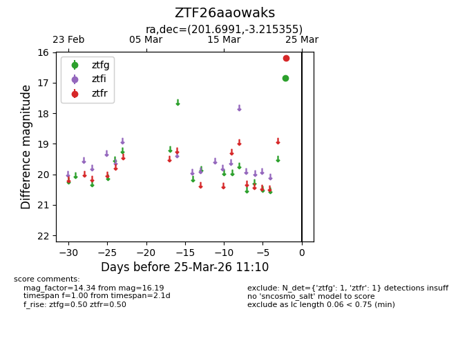
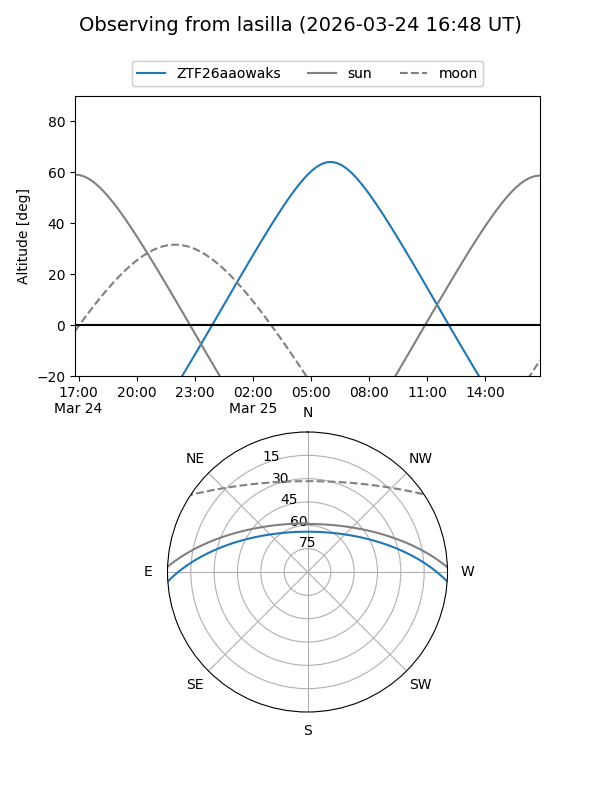
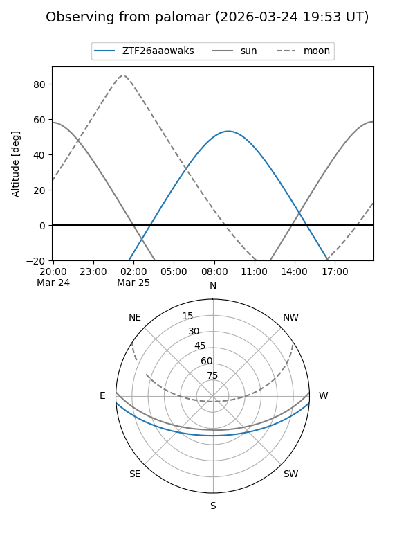

ZTF26aaowaks
Target ZTF26aaowaks at 2026-03-25 11:13
Aliases and brokers:
FINK: link
Lasair: link
ALeRCE: link
alt names
ZTF26aaowaks (ztf,fink_ztf)
Coordinates:
equatorial (ra, dec) = 201.6991,-3.21535
equatorial (HMS+DMS) = 13:26:47.79,-03:12:55.28
galactic (l, b) = (319.9980,+58.47991)
Flags:
Photometry:
last ztfg=16.84, ztfr=16.19
1 ztfg, 1 ztfr detections
Lightcurve

Visibility


Additional plots